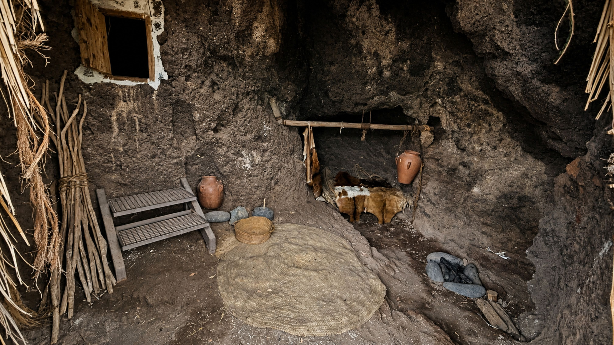

Imágenes del yacimiento
Esta galería reúne diferentes vistas del Cenobio de Valerón para mostrar su valor arqueológico, su integración en el paisaje y la singularidad de su estructura excavada en la roca.



Un espacio para contemplar y comprender
Cada imagen permite apreciar la relación entre patrimonio, paisaje y memoria histórica en uno de los enclaves arqueológicos más emblemáticos de Gran Canaria.
Volver arriba